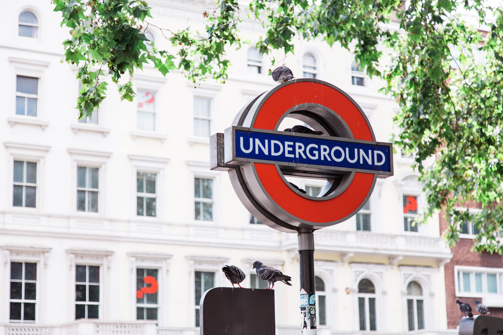
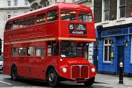
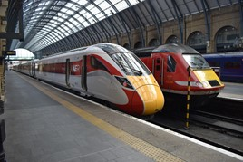
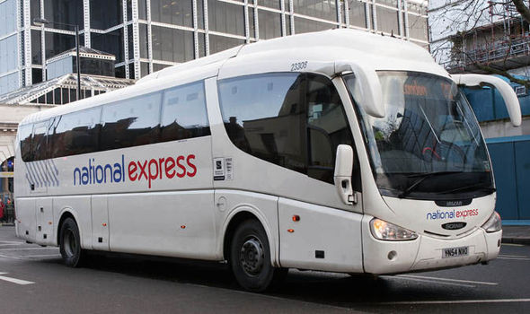

Transportation

Underground:
London underground is similar to the MRT in Taiwan. You can buy an oyster card and the ticket will have discount. Oyster card is like Easycard in Taiwan. You need to top up if it has no money. The routes of the tubes are very complicated. There are four directions, and you must make sure which way you’d like to go. You can download Tube Map APP. Check the map first before you go into the underground.

Bus:
Bus is also a convenient transportation. In addition to normal buses, London is famous for their double-decker buses. The payment method is also the oyster card. You can use CityMapper APP to check the timetable. The most important thing is that bus is cheaper than Underground. Therefore, it is a great choice in the London.

Train:
Trains are the other choice for people to travel to another city. They are quite expensive. But, they are faster and more comfortable than coaches and the environment is good. Moreover, if you want to travel to another country, you can also take the train, called Eurostar. For me, the first time I tried the coach is awful, I have serious carsick. Therefore, I think I will avoid coaches next time.

Coach:
If you need to go to another city, coach is one of your choice. Compare to trains, the coaches are much cheaper. Coaches walk in the highway to go to another city. However, the disadvantage is that the road is rugged and it is possible to be carsick on the coach. Therefore, if you are not easy to be carsick and don’t want to spend too much money, you can choose coaches.